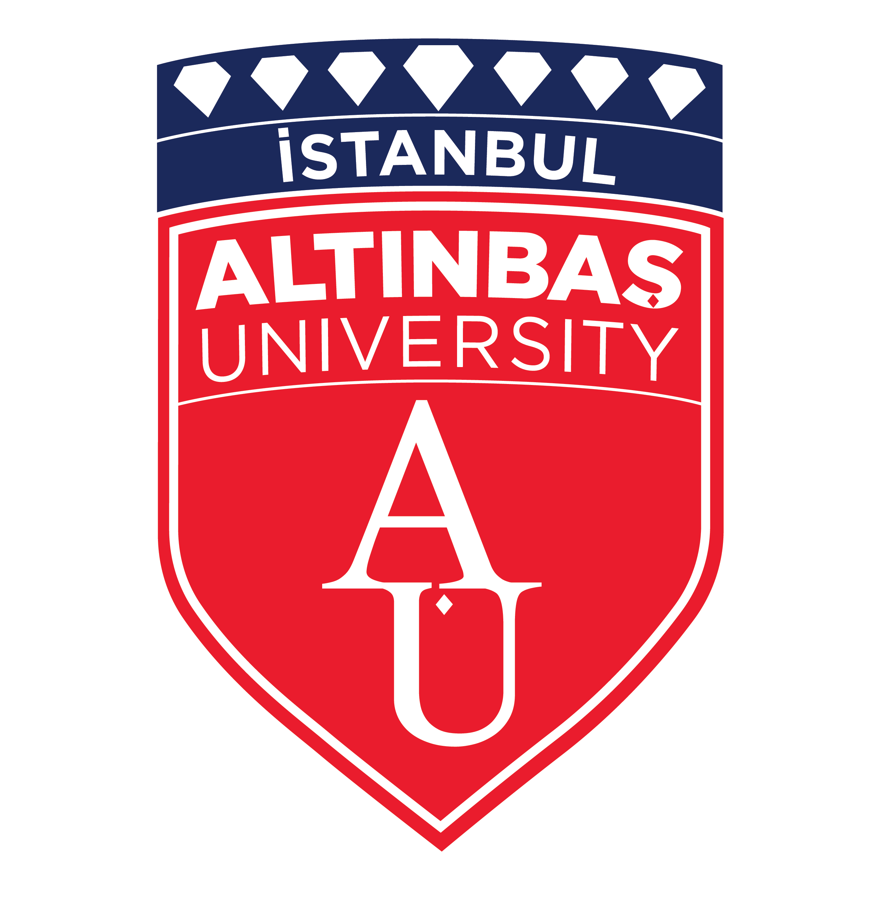

Private Universities in Turkey
Explore the list of private universities in Turkey.
Application Requirements
Private universities often have more flexible admission criteria and shorter application windows. They may also offer scholarships based on academic merit.
Required Documents
- High School Diploma (English or Turkish, or a notarized translation in case the original is in another language)
- High School Transcript
- Valid Passport with a validity of at least 6 months
